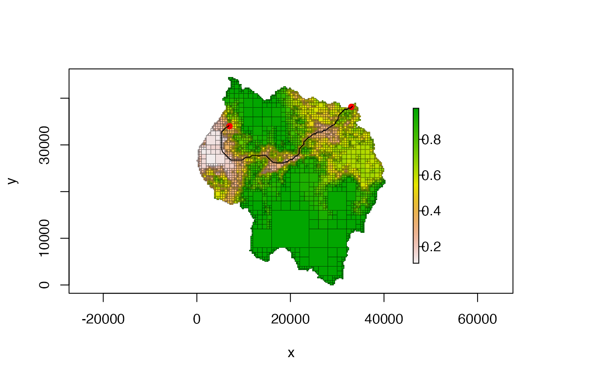
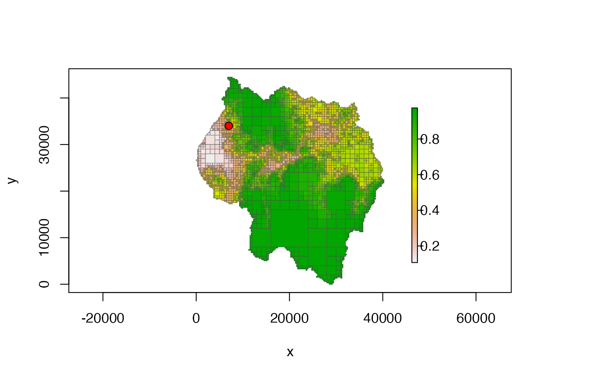
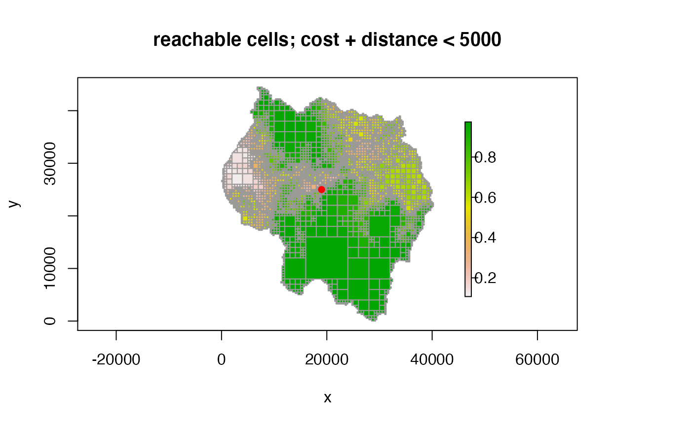
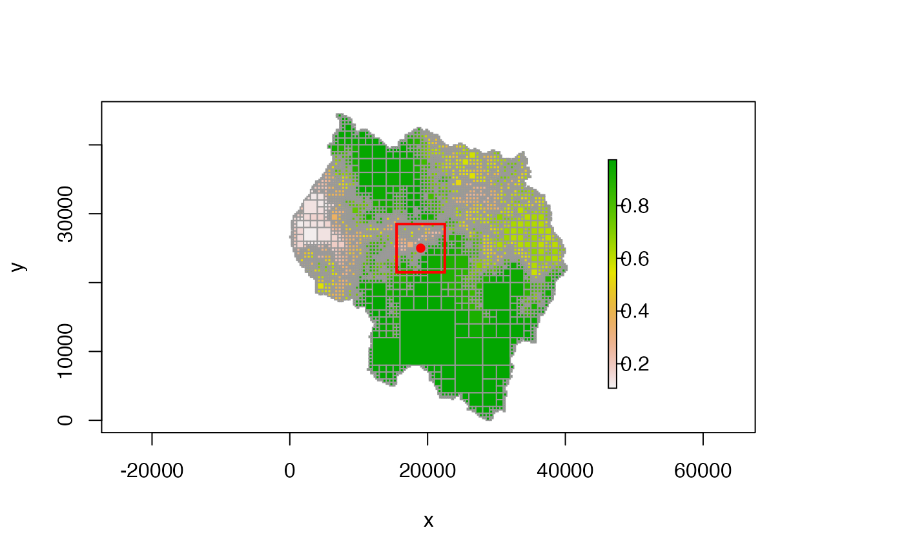
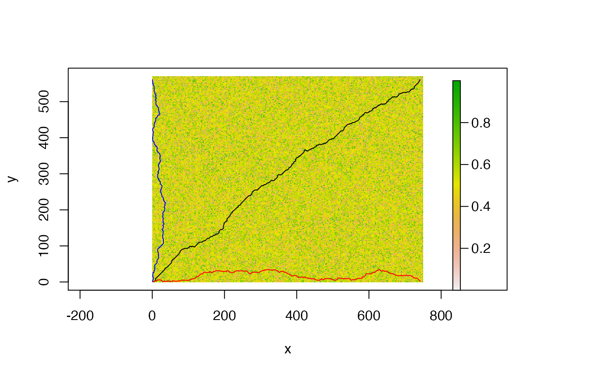

This function creates an LcpFinder object that can then be used
by find_lcp and find_lcps to find
least-cost paths (LCPs).
# S4 method for Quadtree,numeric lcp_finder(x, y, xlim = NULL, ylim = NULL, search_by_centroid = FALSE)
Arguments
| x | a |
|---|---|
| y | numeric vector with 2 elements - the x and y coordinates of the starting point of the path(s) |
| xlim | numeric vector with 2 elements - constrains the nodes included
in the network to those whose extent overlaps with the range specified in
|
| ylim | same as |
| search_by_centroid | boolean; determines which cells are considered to
be "in" the box specified by |
Value
returns an LCP finder object. If start_point falls outside of
the quadtree extent, NULL is returned.
Details
This function creates an object that can then be used by
find_lcp or find_lcps to calculate
least-cost paths on the quadtree.
See the vignette 'quadtree-lcp' for more details.
search_by_centroid is important because it defines what it means for
a cell to "in" the box defined by xlim and ylim. If
search_by_centroid is FALSE, it is possible for least-cost
paths to travel outside the specified box (since a cell may overlap with
the box but have its centroid outside the box.) If TRUE, all LCPs
are guaranteed to be fully contained within the box since cells are only
included if the centroid falls in the box.
Dijkstra's algorithm is used to find least-cost-paths (LCPs) on a network. The network used in this case consists of the cell centroids (nodes) and the neighbor connections (edges). The cost of each edge is taken as the length of the edge times the weight - because the edge travels between two cells, the cost of the edge is weighted by the distance that falls within each cell.
Dijkstra's algorithm essentially builds a tree data structure, where the starting node is the root of the tree. It iteratively builds the tree structure, and in each iteration it adds the node that is "closest" to the current tree - that is, it chooses the node which is easiest to get to. The result is that even if only one LCP is desired, LCPs to other nodes are also calculated in the process.
The LCP finder object internally stores the results as a tree-like structure. Finding the LCP to a given point can be seen as a two-step process. First, construct the tree structure as described above. Second, starting from the destination node, travel up the tree, keeping track of the sequence of nodes passed through, until the root (the starting node) is reached. This sequence of nodes (in reverse, since we started from the destination node) is the LCP to that point.
Once the tree has been constructed, LCPs can be found to any of the of the child nodes without further computation. This allows for efficient computation of multiple LCPs. The LCP finder saves state - whenever an LCP is asked to be calculated, it first checks whether or not a path has been found to that node already - if so, it simply returns the path using the process described above. If not, it builds out the existing tree until the desired node has been reached.
Two slightly different ways of calculating LCPs are provided that differ in
their stop criteria - that is, the condition on which the tree stops being
built. find_lcp() finds a path to a specific point. As soon
as that node has been added to the tree, the algorithm stops and the LCP is
returned. find_lcps() doesn't use a destination point -
instead, the tree continues to be built until the paths exceed a given
cost-distance, depending on which one the user selects. In addition, this
constraint can be ignored in order to find all LCPs within the given set of
nodes. See the documentation of those two functions for more details.
An important note is that because of the heterogeneous nature of a quadtree, the paths found likely won't reflect the 'true' least cost path. This is because treating the centroids of the cells as the nodes introduces some distortion, especially with large cells.
Also note that the xlim and ylim arguments in
lcp_finder() can be used to restrict the search space to the
rectangle defined by xlim and ylim. This speeds up the computation of the
LCP by limiting the number of cells considered.
Another note is that an LcpFinder object is specific to a given starting point. If a new starting point is used, a new LCP finder is needed.
See also
find_lcp() returns the LCP between two points.
find_lcps() finds all LCPs whose cost-distance is less
than some value. summarize_lcps() outputs a summary matrix of
all LCPs that have been calculated so far.
Examples
library(raster) ##################################### # create a quadtree ##################################### data(habitat) rast <- habitat qt <- quadtree(rast, split_threshold = .1, adj_type = "expand") plot(qt, crop = TRUE, na_col = NULL, border_lwd = .4)##################################### # basic usage ##################################### # -------------------- # find the LCP to a single point # -------------------- start_pt1 <- c(6989, 34007) end_pt1 <- c(33015, 38162) # create the LCP finder object and find the LCP lcpf1 <- lcp_finder(qt, start_pt1) path1 <- find_lcp(lcpf1, end_pt1) # plot the LCP plot(qt, crop = TRUE, na_col = NULL, border_col = "gray30", border_lwd = .4)# -------------------- # find all LCPs # -------------------- # calculate all LCPs paths_summary1 <- find_lcps(lcpf1, limit_type = "none")#> Error in .local(x, ...): unused argument (limit_type = "none")# retrieve each individual LCP all_paths1 <- lapply(1:nrow(paths_summary1), function(i) { row_i <- paths_summary1[i, ] pt_i <- with(row_i, c((xmin + xmax) / 2, (ymin + ymax) / 2)) return(find_lcp(lcpf1, pt_i)) })#> Error in h(simpleError(msg, call)): error in evaluating the argument 'x' in selecting a method for function 'nrow': object 'paths_summary1' not found#> Error in lapply(all_paths1, lines): object 'all_paths1' not found# -------------------- # find all cells reachable under a given threshold # -------------------- start_pt2 <- c(19000, 25000) limit <- 5000 # create the LCP finder object and find all the valid LCPs lcpf2 <- lcp_finder(qt, start_pt2) # we could use limit_type = "none" if we wanted to find LCPs to ALL cells paths_summary2 <- find_lcps(lcpf2, limit_type = "cd", limit = limit)#> Error in .local(x, ...): unused argument (limit_type = "cd")# plot the centroids of the reachable cells plot(qt, main = paste0("reachable cells; cost + distance < ", limit), crop = TRUE, na_col = NULL, border_col = "gray60")with(paths_summary2, points((xmin + xmax) / 2, (ymin + ymax) / 2, pch = 16, col = "black", cex = .4))#> Error in with(paths_summary2, points((xmin + xmax)/2, (ymin + ymax)/2, pch = 16, col = "black", cex = 0.4)): object 'paths_summary2' not found# -------------------- # limiting the search area # -------------------- # define the search area box_length <- 7000 xlim <- c(start_pt2[1] - box_length / 2, start_pt2[1] + box_length / 2) ylim <- c(start_pt2[2] - box_length / 2, start_pt2[2] + box_length / 2) # find the LCPs to all the cells inside the search area lcpf3 <- lcp_finder(qt, start_pt2, xlim = xlim, ylim = ylim) paths_summary3 <- find_lcps(lcpf3, limit_type = "none")#> Error in .local(x, ...): unused argument (limit_type = "none")# retrive each LCP all_paths3 <- lapply(1:nrow(paths_summary3), function(i) { row_i <- paths_summary3[i, ] pt_i <- with(row_i, c((xmin + xmax) / 2, (ymin + ymax) / 2)) return(find_lcp(lcpf3, pt_i)) })#> Error in h(simpleError(msg, call)): error in evaluating the argument 'x' in selecting a method for function 'nrow': object 'paths_summary3' not foundwith(paths_summary3, points((xmin + xmax) / 2, (ymin + ymax) / 2, pch = 16, col = "black", cex = .4))#> Error in with(paths_summary3, points((xmin + xmax)/2, (ymin + ymax)/2, pch = 16, col = "black", cex = 0.4)): object 'paths_summary3' not found#> Error in lapply(all_paths3, lines): object 'all_paths3' not found##################################### # a larger example to demonstrate run time ##################################### #generate a large matrix of random values between 0 and 1 nrow <- 570 ncol <- 750 rast <- raster(matrix(runif(nrow * ncol), nrow = nrow, ncol = ncol), xmn = 0, xmx = ncol, ymn = 0, ymx = nrow) #make the quadtree qt1 <- quadtree(rast, split_threshold = .9, adj_type = "expand") #get the LCP finder lcpf <- lcp_finder(qt1, c(1, 1)) # the LCP finder saves state. So finding the path the first time requires # computation, and takes longer, but running it again is nearly instantaneous system.time(find_lcp(lcpf, c(740, 560))) #takes longer#> user system elapsed #> 0.133 0.002 0.135#> user system elapsed #> 0.000 0.000 0.001# in addition, because of how Dijkstra's algorithm works, the LCP finder also # found many other LCPs in the course of finding the first LCP, meaning that # subsequent LCP queries for different destination points will be much faster # (since the LCP finder saves state) system.time(find_lcp(lcpf, c(740, 1)))#> user system elapsed #> 0 0 0#> user system elapsed #> 0.000 0.000 0.001# now save the paths so we can plot them path1 <- find_lcp(lcpf, c(740, 560)) path2 <- find_lcp(lcpf, c(740, 1)) path3 <- find_lcp(lcpf, c(1, 560)) # plot the paths plot(qt1, crop = TRUE, border_col = "transparent", na_col = NULL)